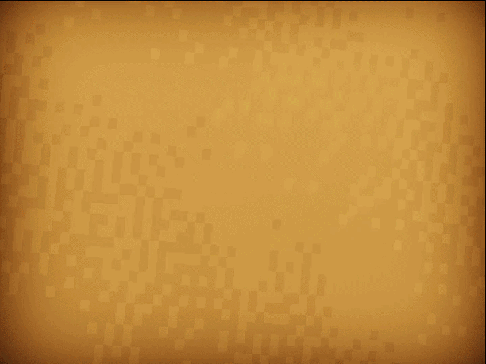
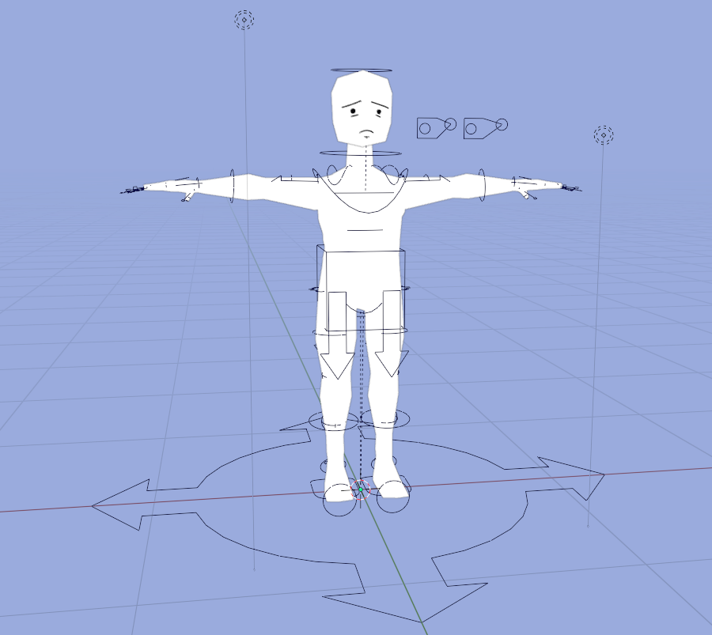
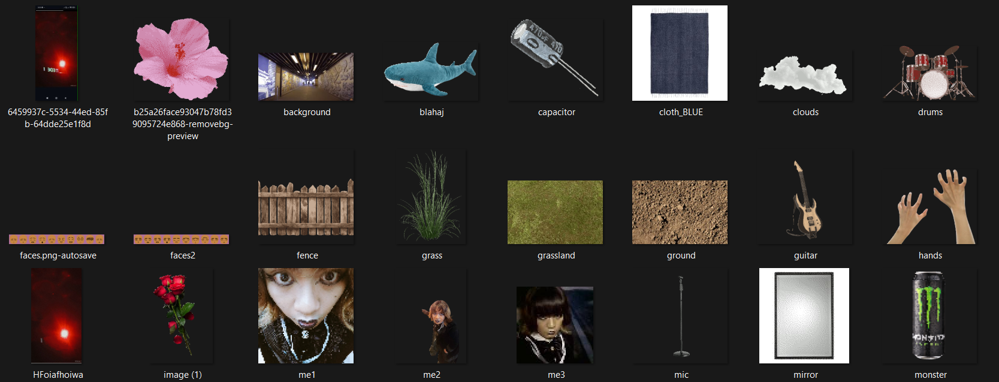
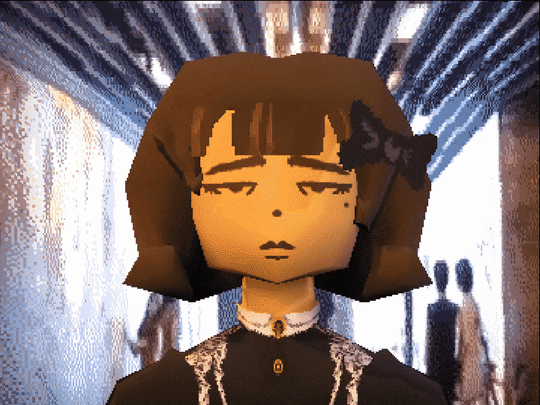

THE
MUSIC VIDEO
In 2024 I single-handedly created an entire 3D animated music video as a tribute to one of my favorite songs at the time, Transgender Dysphoria Blues by Against Me!. In this webpage I want to share my creative process for achieving one of my biggest personal projects. I invite you to see how I used free open source tools like Blender3D and GIMP to create the low poly look I am usually known for.
[PROJECT BACKSTORY] I started working on the project around early October 2024 as a personal vent project. I just came out around a year ago and so have been
open about my transness. Of course you wouldn't pass easily at first and also being out to your parents who were transphobic meant that you were facing transphobia all around
you and all the time. It was tough...
Coincidentally I was also taking a Gender and Society course at the time, a course which just showed me how transphobic my peers in engineering were (which eventually became my
reason for shifting to communications as my major). The final project for the course was to make a video output expressing what you've learned through the course, of course I already
knew a lot about the subject matter because gender theory is one of my favorite brances of philosophy so I asked my professor at the time if I could just submit my personal project as
the output, he accepted fortunately enough.
The entire project was made using only two programs: Blender3D and GIMP. All the 3D work as well as the video editing was done on Blender and the texture effects (to create that grainy pixelated look)
was done on GIMP. The project was done pretty quickly with around just 2 weeks of on and off work and that was achieved by a workflow that was cheap and easy to do taking in mind that I am after all one person team.

STRAIGHT
TO ANIMATION.
Making this project with very little experience with formal production was a challenge. Even more so because I had to have an output in less than a month while also handling other college works
As you'd see later a lot of this project is built on shortcuts and compromise. I learned a lot of techniques that allowed me to cut production time. I WENT STRAIGHT TO ANIMATION which did save a lot of time at first but quickly became trouble for me down the line
Do note that I was doing this project solo so I had to work with my own shortcuts, having worked on larger collaborative projects I would advise you to learn to do things the proper way when you are working with other people
ANALYZE
THE MODELS.
Here are just some of the models used in the project. They will be referenced in later sections
INTERACTIVE 3D ASSET
THE
TRICKS
Just some of the shortcuts I used to speedrun production
USE RIGIFY

I knew I didn't want to use these models for later productions so I made a rough model and jsut rigged it using auto-rigging features
PIXELATED TEXTURES

I used simple image textures and gave them a more uniform feel by pixelating them in GIMP.
STYLE BORN OF LIMITATION

The choppy stop motion like animation this project is known for was actually done because it was faster to work with. I spent less time working on in betweens and more time making sure that each movement was impactful
CHEAT YOUR ENVIRONMENTS

Instead of making a full 3d Environment I basically stretched an image and cheated the camera! Check out the last model in the model viewer to see how I did that
REFERENCE STUFF! NOBODY CARES
I can't be bothered to make my own choreography so I STOLE IT. If you're wondering this entire scene is bascially inspired by The Asylum level from one of my favorite games, Vampire: The Masquerade - Bloodlines
LET MOMENTS LINGER
I struggled with thinking of how to end the music video which led me to forget that the song itself had power! I stopped doing high energy shots and just let the song's end carry the moment for me
HUGE THANKS TO
MY TRANS SIBLINGS
The stress from this video was ultimately worth is whenever I get comments telling me how important the video was to them

You're not alone in feeling the way you do
SMALL PROJECT
BIG FEEL
I never did imagine that people will find my little project and identify strongly with it. Every now and then someone tells me how they needed to see it and that just warms my heart and I hope to do more projects like these in the future.